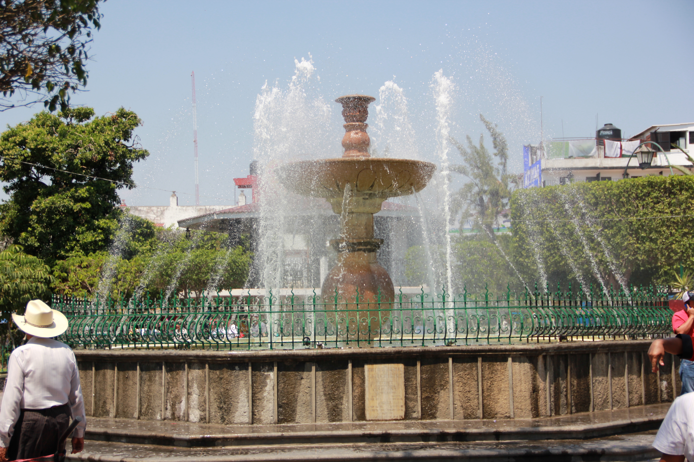

HISTORIA
IZUCAR DE MATAMOROS

Es un asentamiento humano que data desde la expansión de los olmecas del Golfo. Existe una basílica antropomorfa que se exhibe en el museo de antropología e historia en México de origen olmeca procedente de las bocas (población cercana a Izúcar), cuya antigüedad es de 1300 años antes de Cristo. En un Caballo Pintado (otra población aledaña) también se han localizado objetos de esa época. Su ubicación geográfica dio acceso a tribus Zapotecas, Mayas y Nahuas, estos últimos revolucionaron la técnica agrícola con el sistema de riego. La alfarería, artesanía en general, organización, política y costumbres se transculturan por la influencia Teotihuacana. Por el año 1850 de nuestra era, un incendio destruye Teotihuacán; los pueblos se ejercitan en la guerra, las conquistas son frecuentes, los zapotecas organizan ejércitos con Popolocas, Mixtecos, Huilotos, Chándaras, Olmecas y Xicalancas (olmecas históricos). Se extendieron por Itzocan hasta por 1292 que fueron desalojados por los
Toltecas-Chichimeca. Xelhua, capitán nonoalca, reconquistó Itzocan y otras poblaciones que había dominado Heumac, Xelhua fue quién le puso ese nombre: Ixco, cara; Tzóqitl, pintar, enbijar, lod; can, "Lugar donde se pintan o embijan la cara". Izcoatl, hueytlauanic, Mexica, llevó a cabo la rendición de Itzocan a principios del siglo XV. En octubre de 1520 el conquistador ibero aniquila a los defensores de Izúcar capitaneados por
Nahuiacatl. Después de caída la gran Tenochtitlán (13 de agosto de 1521). Hernán Cortés repartió tierras y gentes a sus soldados. Izúcar fue encomendada a Pedro de Alvarado. Los frailes dominicos fundaron el Convento de Santo Domingo en 1538-1552-1612. Pintores y escultores Itzocanos construyeron y decoraron la capilla del Rosario en el templo de Santo Domingo en Puebla. Izúcar recibe con entusiasmo a
Don José María Morelos
y Pavón el 10 de diciembre de 1811; el 16 del mismo mes, se incorpora don Mariano Matamoros y Orive. El realista Don Miguel Soto Maceda atacó Izúcar el 17 de diciembre de 1811, fue rechazado y murió a consecuencia
de las heridas; igual suerte corrió su lugarteniente
Don Mariano Ortíz. Morelos comisionó a Don Francisco Ayala como jefe militar de Izúcar en enero de 1812. Matamoros sale de Cuautla derribando todos los obstáculos el 22 de abril de 1812. Morelos rompió el sitio de Cuautla, la madrugada del día 2 de mayo y estuvo pocos días en Izúcar. La sexta brigada la organizó Matamoros con gente de Izúcar (2500 personas) comandada por Manuel Mier y Terán, Juan José Rodríguez, Mariano Ramírez, Rafael Pozos, Ignacio Vilchis y el español Antonio de Sesma y Alencáster; los escuadrones y regimientos los bautizó con el nombre de Santos. Matamoros fue fusilado el 3 de febrero en Valladolid (Morelia). El general conservador Cobos, ataca al liberal Miguel Cástulo de Alatriste y lo fusila en Izúcar el 11 de abril de 1861. Por decreto del gobierno del estado y para perpetuar la memoria del insigne insurgente, Don Mariano Antonio Matamoros y Orive, el 29 de octubre de 1825, se erige en ciudad, con el nombre de Izúcar de Matamoros. El 17 de noviembre de 1824 se asignan arbitrios para que se repare el puente de la cárcel. El 7 de mayo de 1825 se indulta de la pena de muerte a María Eugenia Huatzi. Se conceden arbitrios al Hospital de San Juan de Dios el 8 de octubre de 1831.
 IR A INICIO